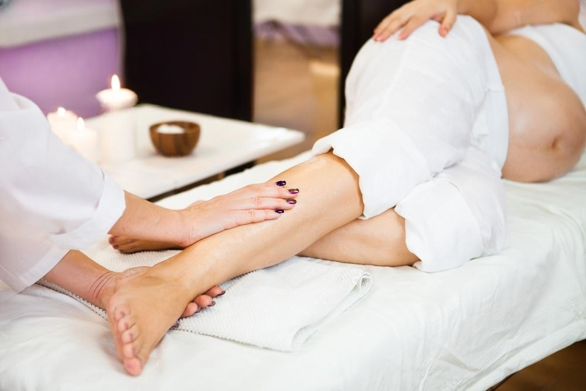
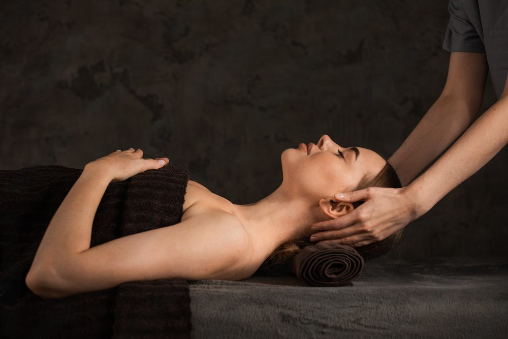

.png)
Masaje Corporal Específico
El masaje relajante corporal específico se enfoca en áreas concretas del cuerpo, como
cuello, espalda o piernas, utilizando técnicas suaves para aliviar tensiones localizadas,
reducir dolores musculares y fomentar una sensación general de relajación y bienestar.

Masaje Facial Kobido
El masaje Kobido es una técnica ancestral japonesa que combina movimientos suaves y precisos
para estimular la circulación,
relajar los músculos faciales y promover un efecto rejuvenecedor natural en la piel.

Masaje Técnica Shiatsu
El masaje facial Shiatzu es una técnica japonesa que aplica presión sobre puntos específicos
del rostro, utilizando los dedos y las palmas,
para equilibrar la energía, aliviar tensiones y mejorar la circulación, promoviendo una piel
más fresca y relajada.

Masaje Cuerpo Completo
El masaje relajante corporal es una técnica que utiliza movimientos lentos y suaves en todo
el cuerpo para liberar tensiones,
reducir el estrés y promover una profunda sensación de bienestar físico y mental.

Reflexología Podal
El masaje relajante corporal específico se enfoca en áreas concretas del cuerpo, como
cuello, espalda o piernas, utilizando técnicas suaves para aliviar tensiones localizadas,
reducir dolores musculares y fomentar una sensación general de relajación y bienestar.

Masaje Desestructurante
El masaje desestructurante es una técnica ancestral japonesa que combina movimientos suaves y precisos
para estimular la circulación,
relajar los músculos faciales y promover un efecto rejuvenecedor natural en la piel.